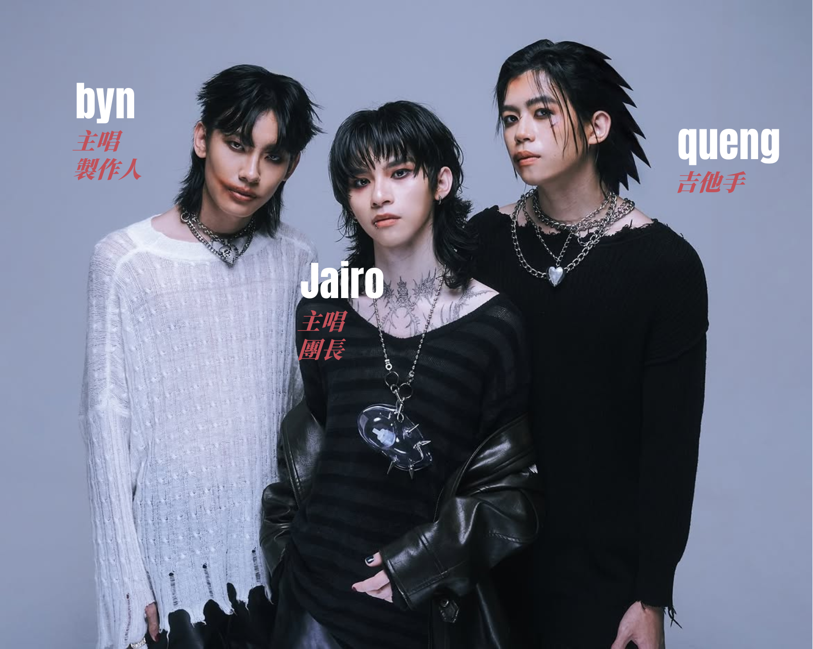

No Time For Silence 簡稱NTFS，成立於2023年。憑藉搖滾結合電子的獨特風格，在新生代音樂人中嶄露頭角。出道僅一年便先後登上香港亞太音樂祭、KL Chinatown Festival 等大型舞臺。不僅跨界爲電影《寄生下流》製作插曲，去年首次發行專輯便一舉斬獲fresh music awards 最佳新團體及區域專輯獎（馬來西亞）兩項提名。被Spotify 選爲2026年新馬地區的RADAR 新勢力實至名歸。

有別於傳統的樂團配置，No Time For Silence 是由雙主唱+吉他手組成的三人樂團。成員包括主唱兼團長Jairo、主唱兼製作人byn 及吉他手queng。
三位的淵源，始於兩位主唱之間。在涉獵過不同種類的音樂後，Jairo 意識到自己或許可以放手一搏嘗試自己一直向往的搖滾樂，便找到了byn 一同進行創作。爲了讓作品更加完整，Jairo 想起了之前在影視行業有過交集的queng，就此補齊了吉他手的位缺。
在搖滾的場域裡，對齊共振頻率的三顆原子
三人在組成NTFS 之前，早在音樂領域裡各自留下了或深或淺的足跡。Jairo 潛心鑽研嘻哈；byn 則熟練掌握R&B、Pop 等曲風。乍看之下queng 才是隊内擁有搖滾「純血」血統的那位。
byn早前在大棒記的采訪中更是直言「一開始做音樂的時候，你讓我舉一個我最討厭的Genre，就是搖滾」。而後透過不斷地探索，byn 見識到了搖滾樂對於不同情緒表達的包容性；搖滾就此成爲連結三人的紐帶。
搖滾於NTFS而言只是一種情緒的表達方式，而讓他們能脫穎而出的不僅僅是鮮明的曲風，個人認爲更是離不開兩位主唱風格鮮明又互補的音色。Jairo 的嘶吼腔無疑是NTFS 質感的靈魂，與byn 的音色重疊時，除人聲變得更加立體之外，byn 本身略帶抒情的唱腔讓整體情緒層次更加細膩豐滿。
編曲上有queng 的「純血」審美兜底，融合byn 的創作底蘊，讓NTFS的搖滾在保留硬核的同時也沾染少許流行的氣質，非常適合作爲接觸搖滾的入門。
循序漸進可嘗試<我只想>，編曲隨著鼓點的力道加重，NTFS搖滾的内核透過Jairo的演繹變得更加直觀。
携友族樂團Sekumpulan Orang Gila 一同完成的 <dancing on my grave.flp> ，不僅是現實層面突破了族群的界限，更把友族辛辣的口味一同灌入音樂，讓聼感愈發重口。
<結>
猶記得24年3月第一次刷到NTFS出道的預熱帖，到第一次開箱粉絲禮物的青澀，時間確實過得很快。年紀尚輕卻有著過硬的實力和創作能量，NTFS的出現無疑是給馬來西亞獨立音樂圈投下一顆震撼彈，但我想這才是我們樂見的新星力量。